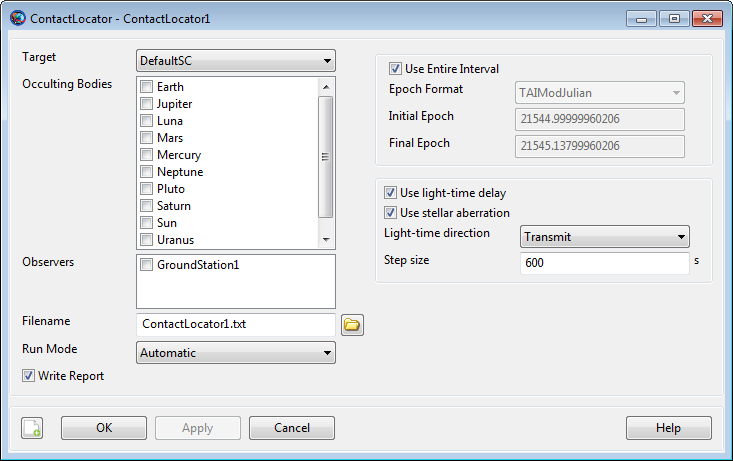

ContactLocator — A line-of-sight event locator between a target Spacecraft and an observer GroundStation
ContactLocator is a SPICE-based subsystem that uses a parallel configuration for the solar system and celestial bodies from other GMAT components. For precision applications, care must be taken to ensure that both configurations are consistent. See Remarks for details.
A ContactLocator is an event locator used to find line-of-sight contact events between a Spacecraft and a GroundStation. By default, a ContactLocator generates a text event report listing the beginning and ending times of each line-of-sight event, along with the duration. Contact location can be performed over the entire propagation interval or over a subinterval, and can optionally adjust for light-time delay and stellar aberration. Contact location can be configured to search for times of occultation of other CelestialBody resources that may block line of sight, and can limit contact events to a specified minimum elevation angle configured on the GroundStation.
Contact location can be performed between one Spacecraft (Target) and any number of GroundStation resources (Observers). Each target-observer pair is searched individually, and results in a separate segment of the resulting report. All pairs must use the same interval and search options; to customize the options per pair, use multiple ContactLocator resources.
Third-body occultation searches can be included by listing one or more CelestialBody resources in the OccultingBodies list. Any configured CelestialBody can be used as an occulting body, including user-defined ones. By default, no occultation searches are performed; the central body of the GroundStation is included automatically in the basic line-of-sight algorithm.
By default, the ContactLocator searches the
entire interval of propagation of the Target, after
applying certain endpoint light-time adjustments; see Remarks for details. To
search a custom interval, set UseEntireInterval to
False and set InitialEpoch and
FinalEpoch accordingly. Note that these epochs are
assumed to be at the observer, and so must be valid when translated to the
target via light-time delay and stellar aberration, if configured. If they
fall outside the propagation interval of the Target,
GMAT will display an error.
The contact locator can optionally adjust for both light-time delay and stellar aberration, using either a transmit sense (Observer→Target) or receive sense (Observer←Target) depending on the value of LightTimeDirection. The light-time direction affects the valid search interval by limiting searches near the start of the interval (for transmit sense) or the end of the interval (for receive sense). See Remarks for details. Stellar aberration is only applied for the line-of-sight portion of the search; it has no effect during occultation searches.
The event search is performed at a fixed step through the interval. You can control the step size (in seconds) by setting the StepSize field. An appropriate choice for step size is no greater than half the period of the line-of-sight function—that is, half the orbit period for an elliptical orbit. If third-body occultations are used, the maximum step size is no greater than the minimum-duration occultation event you wish to find. See Remarks for details.
GMAT uses the SPICE library for the fundamental event location algorithm. As such, all celestial body data is loaded from SPICE kernels for this subsystem, rather than GMAT's own CelestialBody shape and orientation configuration. See Remarks for details.
Unless otherwise mentioned, ContactLocator fields cannot be set in the mission sequence.
See Also: CelestialBody, GroundStation, Spacecraft, EclipseLocator, FindEvents
| Field | Description | ||||||||||||
|---|---|---|---|---|---|---|---|---|---|---|---|---|---|
| Filename | Name and path of the contact report file. This field can be set in the mission sequence.
| ||||||||||||
| FinalEpoch | Last epoch to search for contacts, in the format specified by InputEpochFormat. The epoch is relative to the Observer, and must map to a valid epoch in the Target ephemeris interval, including any light time. This field can be set in the mission sequence.
| ||||||||||||
| InitialEpoch | First epoch to search for contacts, in the format specified by InputEpochFormat. The epoch is relative to the , and must map to a valid epoch in the ephemeris interval, including any light time. This field can be set in the mission sequence.
| ||||||||||||
| LightTimeDirection | Sense of light-time calculation: transmit from observer or receive at observer. The clock is always hosted on the Target.
| ||||||||||||
| Observers | List of the contact observer objects. Can be any number of GMAT GroundStation resources.
| ||||||||||||
| OccultingBodies | List of occulting bodies to search for contacts. Can be any number of GMAT CelestialBody-type resources, such as Planet, Moon, Asteroid, etc. Note that an occulting body must have a mass (e.g. not LibrationPoint or Barycenter).
| ||||||||||||
| RunMode | Mode of event location execution.
| ||||||||||||
| StepSize | Step size of event locator. See Remarks for discussion of appropriate values.
| ||||||||||||
| Target | The target Spacecraft resource to search for contacts.
| ||||||||||||
| UseEntireInterval | Search the entire available Target ephemeris interval, after adjusting the end-points for light-time delay as appropriate. See Remarks for details. This field can be set in the mission sequence.
| ||||||||||||
| UseLightTimeDelay | Use light-time delay in the event-finding algorithm. The clock is always hosted on the .
| ||||||||||||
| UseStellarAberration | Use stellar aberration in addition to light-time delay in the event-finding algorithm. Light-time delay must be enabled. Stellar aberration only affects line-of-sight searches, not occultation searches.
| ||||||||||||
| WriteReport | Write an event report when event location is executed. This field can be set in the mission sequence.
|
|  |
The default ContactLocator GUI for a new resource is shown above. You can choose one Spacecraft from Target, which is populated by all the Spacecraft resources currently configured in the mission. In the Observers list, you can check the box next to all GroundStations you want to search for contacts to.
To search for third-body occultations, check the boxes next to any applicable CelestialBody resources in the Occulting Bodies list. This list shows all celestial bodies currently configured in the mission. Note that each occultation search will increase the execution time of the overall search.
You can configure the output via Filename, Run Mode, and Write Report near the bottom. If Write Report is enabled, a text report will be written to the file specified in Filename. The search will execute during FindEvents commands (for Manual or Automatic modes) and automatically at the end of the mission (for Automatic mode), depending on the Run Mode.
You can configure the search interval via the options in the upper right. Uncheck Use Entire Interval to set the search interval manually. See the Remarks section for considerations when setting the search interval.
You can control the search algorithm via the options in the bottom right. Configure light-time and stellar aberration via the check boxes next to each, and select the signal direction via the Light-time direction selection.
To control the fidelity and execution time of the search, set the Step size appropriately. See the Remarks section for details.
The ContactLocator implementation is based on the NAIF SPICE toolkit, which uses a different mechanism for environmental data such as celestial body shape and orientation, planetary ephemerides, body-specific frame definitions, and leap seconds. Therefore, it is necessary to maintain two parallel configurations to ensure that the event location results are consistent with GMAT's own propagation and other parameters. The specific data to be maintained is:
Planetary shape and orientation:
GMAT core: CelestialBody.EquatorialRadius, Flattening, SpinAxisRAConstant, SpinAxisRARate, etc.
ContactLocator: SolarSystem.PCKFilename, CelestialBody.PlanetarySpiceKernelName
Planetary ephemeris:
GMAT core: SolarSystem.DEFilename, or (SolarSystem.SPKFilename, CelestialBody.OrbitSpiceKernelName, CelestialBody.NAIFId)
ContactLocator: SolarSystem.SPKFilename, CelestialBody.OrbitSpiceKernelName, CelestialBody.NAIFId
Body-fixed frame:
GMAT core: built-in
ContactLocator: CelestialBody.SpiceFrameId, CelestialBody.FrameSpiceKernelName
Leap seconds:
GMAT core: startup file LEAP_SECS_FILE
setting
ContactLocator: SolarSystem.LSKFilename
For precise applications, the Earth shape must be consistent in both subsystems to ensure consistent placement of a GroundStation. The following script lines make the two definitions consistent.
SolarSystem.PCKFilename = '..\data\planetary_coeff\pck00010.tpc' Earth.EquatorialRadius = 6378.1366 Earth.Flattening = 0.00335281310845547
See SolarSystem and CelestialBody for more details.
The ContactLocator search interval can be specified either as the entire ephemeris interval of the Target, or as a user-defined interval. Each mode offers specific behavior related to handling of light-time delay and discontinuous intervals.
If UseEntireInterval is true, the search is
performed over the entire ephemeris interval of the
Target, including any gaps or discontinuities. If
light-time delay is enabled, the search interval is truncated by the
approximate light time to allow SPICE to determine the exact light-time
delay between the participants during the search. If
LightTimeDirection is Transmit,
the beginning of the interval is truncated. If
LightTimeDirection is Receive,
the end of the interval is truncated. In either case, the other end of
the interval is trimmed slightly via bisection to avoid stepping beyond
the end of the ephemeris due to numeric precision issues. This trimming
is typically less than 1 s. The endpoints of gaps or discontinuities are
not modified, so these are not fully supported if light-time delay is
enabled. If light-time delay is disabled, the entire interval is used
directly, with no endpoint manipulation.
If UseEntireInterval is false, the provided InitialEpoch and FinalEpoch are used to form the search interval directly. This interval is consistent with the Observer clock, and does not support the inclusion of gaps or discontinuities from the Target ephemeris. The user must ensure than the provided interval results in valid Target ephemeris epochs after light-time delay and stellar aberration have been applied.
These rules are summarized in the following table, where t0 and tf are the beginning and end of the Target ephemeris, respectively, and lt is the light time between the Target and the Observer.
| UseEntireInterval true | UseEntireInterval false | |
| UseLightTimeDelay true |
|
|
| UseLightTimeDelay false |
|
|
The ContactLocator works in conjunction with the FindEvents command: the ContactLocator resource defines the configuration of the event search, and the FindEvents command executes the search at a specific point in the mission sequence. The mode of interaction is defined by ContactLocator.RunMode, which has three options:
Automatic: All
FindEvents commands are executed as-is, plus
an additional FindEvents is executed
automatically at the end of the mission sequence.
Manual: All
FindEvents commands are executed
as-is.
Disabled: FindEvents
commands are ignored.
The ContactLocator uses the NAIF SPICE GF (geometry finder) subsystem to perform event location. Specifically, the following two calls are used for the search:
Both functions implement a fixed-step search method through the interval, with an embedded root-location step if an event is found. Proper selection of StepSize differs between the two functions.
For the basic line-of-sight search, without third-body occultations, StepSize can be set as high as one-half the period of the event function. For an elliptic orbit, this is up to one-half the orbit period.
For third-body occultations, StepSize should be set equal to the length of the minimum-duration event to be found, or equal to the lenght of the minimum-duration gap between events, whichever is smaller. To guarantee location of 10-second occultations, set StepSize = 10.
If no third-body occultations are to be found, you can increase performance of the search by increasing StepSize per the notes above.
For details, see the reference documentation for the two functions linked above.
When WriteReport is enabled, ContactLocator outputs an event report at the end of each search execution. The report contains the following data:
Target name
For each Observer:
Observer name
For each event:
Event start time (UTC)
Event stop time (UTC)
Duration (s)
Total number of events
A sample report is shown below.
Target: DefaultSC Observer: GroundStation1 Start Time (UTC) Stop Time (UTC) Duration (s) 01 Jan 2000 13:18:45.268 01 Jan 2000 13:29:54.824 669.55576907 01 Jan 2000 15:06:44.752 01 Jan 2000 15:18:22.762 698.01023654 Number of events : 2 Observer: GroundStation2 Start Time (UTC) Stop Time (UTC) Duration (s) 01 Jan 2000 13:36:13.792 01 Jan 2000 13:47:51.717 697.92488540 Number of events : 1
When using the SPK propagator, you load one or more SPK ephemeris files using the Spacecraft.OrbitSpiceKernelName field. For the purposes of event location, this field causes the appropriate ephemeris files to be loaded automatically on run, and so use of the Propagate command is not necessary. This is an easy way of performing event location on an existing SPK ephemeris file. See the example below.
Perform a basic contact search in LEO:
SolarSystem.EphemerisSource = 'DE421'
Earth.EquatorialRadius = 6378.1366
Earth.Flattening = 0.00335281310845547
Create Spacecraft sat
sat.DateFormat = UTCGregorian
sat.Epoch = '15 Sep 2010 16:00:00.000'
sat.CoordinateSystem = EarthMJ2000Eq
sat.DisplayStateType = Keplerian
sat.SMA = 6678.14
sat.ECC = 0.001
sat.INC = 0
sat.RAAN = 0
sat.AOP = 0
sat.TA = 180
Create ForceModel fm
fm.CentralBody = Earth
fm.PrimaryBodies = {Earth}
fm.GravityField.Earth.PotentialFile = 'JGM2.cof'
fm.GravityField.Earth.Degree = 0
fm.GravityField.Earth.Order = 0
fm.GravityField.Earth.EarthTideModel = 'None'
fm.Drag.AtmosphereModel = None
fm.PointMasses = {}
fm.RelativisticCorrection = Off
fm.SRP = Off
Create Propagator prop
prop.FM = fm
prop.Type = RungeKutta89
Create GroundStation GS
GS.CentralBody = Earth
GS.StateType = Spherical
GS.HorizonReference = Ellipsoid
GS.Location1 = 0;
GS.Location2 = 0;
GS.Location3 = 0;
Create ContactLocator cl
cl.Target = sat
cl.Observers = {GS}
cl.Filename = 'Simple.report'
BeginMissionSequence
Propagate prop(sat) {sat.ElapsedSecs = 10800}Perform a contact event search from an Earth ground station to a Mars orbiter, with Phobos occultations:
% Mars orbiter, 2 days, Mars and Phobos eclipses
SolarSystem.EphemerisSource = 'SPICE'
SolarSystem.SPKFilename = 'de421.bsp'
Mars.OrbitSpiceKernelName = '../data/planetary_ephem/spk/mar063.bsp'
Earth.EquatorialRadius = 6378.1366
Earth.Flattening = 0.00335281310845547
Create Spacecraft sat
sat.DateFormat = UTCGregorian
sat.Epoch = '11 Mar 2004 12:00:00.000'
sat.CoordinateSystem = MarsMJ2000Eq
sat.DisplayStateType = Cartesian
sat.X = -1.436997966893255e+003
sat.Y = 2.336077717512823e+003
sat.Z = 2.477821416108639e+003
sat.VX = -2.978497667195258e+000
sat.VY = -1.638005864673213e+000
sat.VZ = -1.836385137438366e-001
Create ForceModel fm
fm.CentralBody = Mars
fm.PrimaryBodies = {Mars}
fm.GravityField.Mars.PotentialFile = 'Mars50c.cof'
fm.GravityField.Mars.Degree = 0
fm.GravityField.Mars.Order = 0
fm.Drag.AtmosphereModel = None
fm.PointMasses = {}
fm.RelativisticCorrection = Off
fm.SRP = Off
Create Propagator prop
prop.FM = fm
prop.Type = RungeKutta89
Create Moon Phobos
Phobos.CentralBody = 'Mars'
Phobos.PosVelSource = 'SPICE'
Phobos.NAIFId = 401
Phobos.OrbitSpiceKernelName = {'mar063.bsp'}
Phobos.SpiceFrameId = 'IAU_PHOBOS'
Phobos.EquatorialRadius = 13.5
Phobos.Flattening = 0.3185185185185186
Phobos.Mu = 7.093399e-004
Create Moon Deimos
Deimos.CentralBody = 'Mars'
Deimos.PosVelSource = 'SPICE'
Deimos.NAIFId = 402
Deimos.OrbitSpiceKernelName = {'mar063.bsp'}
Deimos.SpiceFrameId = 'IAU_DEIMOS'
Deimos.EquatorialRadius = 7.5
Deimos.Flattening = 0.30666666666666664
Deimos.Mu = 1.588174e-004
Create CoordinateSystem MarsMJ2000Eq
MarsMJ2000Eq.Origin = Mars
MarsMJ2000Eq.Axes = MJ2000Eq
Create GroundStation GS
GS.CentralBody = Earth
GS.StateType = Spherical
GS.HorizonReference = Ellipsoid
GS.Location1 = 36.3269
GS.Location2 = 127.433
GS.Location3 = 0.081
Create ContactLocator cl
cl.Target = sat
cl.Observers = {GS}
cl.OccultingBodies = {Sun, Mercury, Venus, Luna, Mars, Phobos, Deimos}
cl.Filename = 'Martian.report'
cl.StepSize = 5
BeginMissionSequence
Propagate prop(sat) {sat.ElapsedDays = 2}Perform contact location on an existing SPK ephemeris file:
SolarSystem.EphemerisSource = 'DE421'
Earth.EquatorialRadius = 6378.1366
Earth.Flattening = 0.00335281310845547
Create Spacecraft sat
sat.OrbitSpiceKernelName = {'../data/vehicle/ephem/spk/Events_Simple.bsp'}
Create GroundStation GS
GS.CentralBody = Earth
GS.StateType = Spherical
GS.HorizonReference = Ellipsoid
GS.Location1 = 0
GS.Location2 = 0
GS.Location3 = 0
Create ContactLocator cl
cl.Target = sat
cl.Observers = {GS}
cl.Filename = 'SPKPropagation.report'
BeginMissionSequence